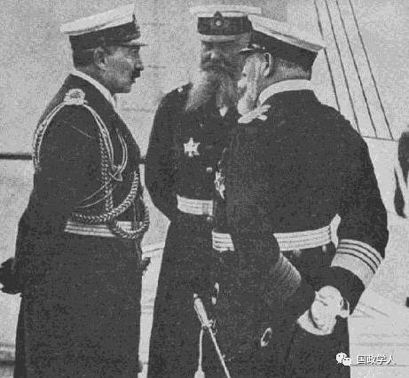
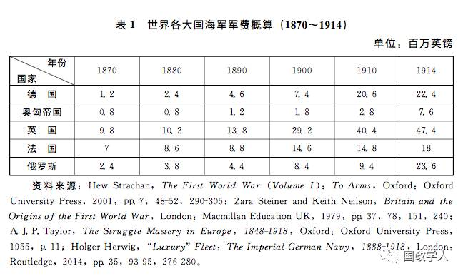
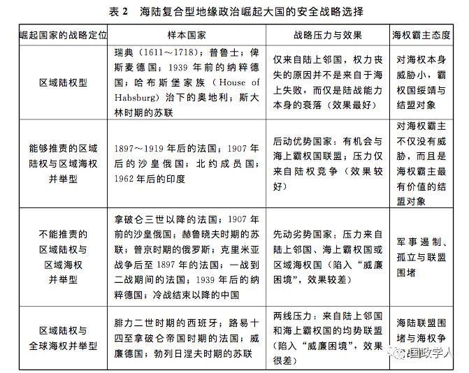
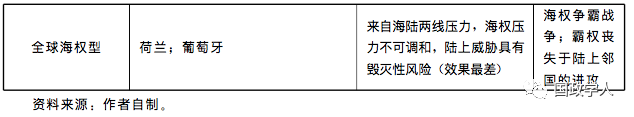
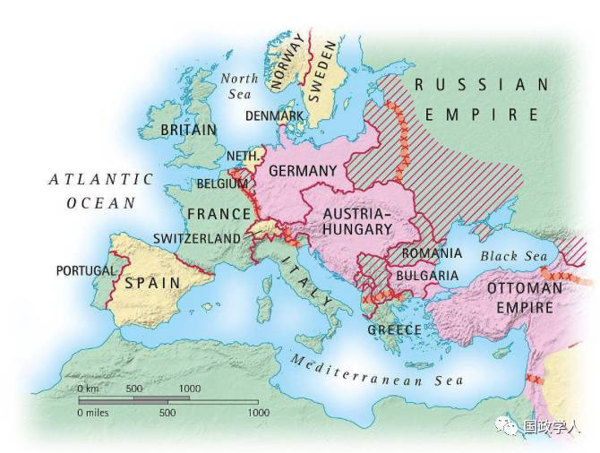
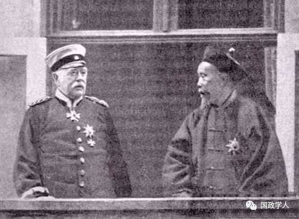
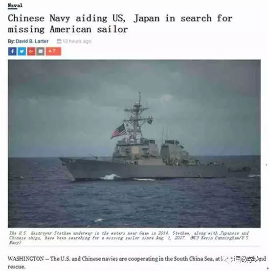

收录于合集

简
姜鹏
哈尔滨工程大学形势与政策研究中心讲师、外交学院国际关系研究所2015级博士后。
内容提要
在研究新型大国关系的议程中，关于崛起国与守成国如何规避“修昔底德陷阱”的探讨很多，但是关于“威廉困境”是如何诱发“修昔底德陷阱”的研究却很少。通过将地缘政治学与大国崛起战略进行交叉研究发现：海陆复合型地缘政治崛起大国追求区域海权存在着时间上的“先动劣势”和空间上的“重点区域劣势”两大特征，即率先追求区域海权或在霸权国利益核心区域追求海权的崛起国最容易被视为挑战者；而掌握“后动优势”和“次要区域”的崛起国则有机会通过推责战略而成为霸权国绥靖与鼓励的结盟对象。在亚太地区中美二元结构日益明晰的前提下，中国追求区域海权缺乏一个有效的推责对象。一旦中国陷入区域陆权与区域海权并举战略诱发的“威廉困境”之中，就可能加深中美之间的战略互疑，并成为日本与印度谋求区域海权的推责对象。
关键词
威廉困境 修昔底德陷阱 区域海权 区域陆权 中国崛起
引 言
“威廉困境”既是一种在国际关系史中反复发生的地缘政治现象，同时也是本研究进行理论构建所关注的兴趣起点。从现象角度讲，“威廉困境”描述的是作为海陆复合型地缘政治大国的德意志第二帝国在崛起进程中，德皇威廉二世（William II）既支持海军元帅阿尔弗雷德·冯·提尔皮茨（Alfred von Tirpitz）要求扩张海军的“庞大海军计划”，同时也支持陆军元帅阿尔弗雷德·冯·施里芬（Alfred von Schlieffen）扩充陆军的“两线作战计划”。为了同时获得海陆两栖战略优势，威廉德国不得不将宝贵的战略资源投放到与海权霸主英国之间昂贵的海权竞争，以及同陆上强国法俄之间紧张的陆权竞争中。在海陆并举的安全战略选择下，德国的两线扩张战略不仅诱发了一个原本可以不必出现的反对它的协约国同盟，同时也使自身陷入了一场代价高昂的马拉松式的军备竞赛。

威廉二世（左）阿尔弗雷德·提尔皮茨（中）1897年，提尔皮茨被威廉二世任命为帝国海军大臣。他刚一到任，就向德国议会申请7000万马克用以建造三艘新式战列舰。威廉二世和提尔皮茨的亲密合作，以及德国海军对英国海军的挑战之路，就这样拉开了序幕。
从概念角度讲，“威廉困境”有两层含义 。 第一层含义是指海陆复合型地缘政治崛起国因同时追求在两大地缘空间上的优势而激活体系内潜在的权力均衡机制，从而成为被其他成员联合制衡的主要对象。更重要的是，实行这种战略的崛起国意识不到自身的战略选择对霸权国及周边国家所造成的威胁感，也意识不到来自周边的结盟制衡很大程度上是对其目标过多而四面树敌的反应 。克劳斯·爱泼斯坦（Klaus Epstein）在分析一战起因时指出：“威廉德国的威胁并不在于其版图、人口、经济水平、工业能力，而在于其国内存在的强烈的军国主义扩张情绪，对现存国际体系秩序与领土安排的否定，以及皇帝本人对采用激进军事手段打破秩序安排的倾向。这一切都令其他欧洲国家对德国的崛起感到恐惧。这是一个客观事实，德国本应却没有意识到这一事实。” 第二层含义是指海陆复合型地缘政治崛起国对体系霸权国制衡行为所产生的认知悖论，即霸权国对崛起国的任何妥协或善意绥靖都会被崛起国解读为自身采取强势姿态的明显奏效和霸权国的软弱与缺乏决心，而霸权国对崛起国的强硬反应则会被解读为霸权国对崛起国本能的敌意，从而使崛起国以更强势的姿态针锋相对地打破霸权国的战略包围 。这种认知悖论最明显地体现在一战爆发前的威廉德国。当时国内的乐观主义者认为，德国已经强大到可以把任何眼前的敌人像牛皮纸一样揉成一团，而悲观主义者则认为国家面临着严重的战略敌视与围堵，因而需要尽早发动一场坚定且毫不妥协的预防性战争。
从本质上讲，“威廉困境”与其说是一种崛起国在战略角色上的精神分裂，不如说是缺乏一个有能力对国内各种利益集团所主张的战略优先性进行协调与统筹的权力核心。在一战前的德意志第二帝国内部，海军元帅提尔皮茨和支持他的“海洋军工复合体”认为欧洲大陆已经像一个填满了格子的跳棋局，因而主张发展公海舰队并获得“阳光下的广大地盘”；同时，他们对德国与法俄之间因为很小的欧洲领土所产生的敌意感到无法理解。陆军元帅施里芬、毛奇（Moltke）和支持他们的“陆军军工复合体”则认为，德国面临的现实安全威胁是地处法俄两国之间的中欧平原这一尴尬位置，而不是相距遥远的海洋国家英国。他们对德国主动挑起同英国的海军军备竞赛感到气愤。此外，德国社会中的其他大利益集团——如罗马天主教中心和社会民主党——则仅仅赞成对俄国发动战争，同时主张积极争取英法两国的友谊或中立。在一战爆发前的20年里，德国领导人的案头摆满了关于建立强大的海军、修建近东的巴格达铁路和争夺欧洲霸权等主题的研究报告，而这些看似能够给君主和国家带来权力声望的建议最终都被德皇随波逐流地予以默许。
本研究所关注的海陆复合型地缘政治崛起大国在战略空间分布上应包含两个基本特征。第一，这类国家必须既有绵长的领海基线，同时又不能四面环海而远离大陆 。因此，近代崛起的日本、英国这种典型的离岸海权国就不符合海陆复合型地缘政治大国的特征。 第二，这类国家与周边其他陆上强邻存在着明显的安全博弈 。这一条件将崛起的美国作为地缘政治中的特例排除在关注普遍性的研究之外。美国虽然是19世纪末的崛起国，但它自建国以来一直奉行孤立主义原则而远离欧洲国际社会的纷争。二战爆发前的大部分时间里，美国都没有深度卷入到以欧洲体系为核心的安全竞争之中。鉴于独特的地缘政治空间——远离国际政治核心的欧洲大陆且周围没有其他陆上强邻存在——美国可以被看成为“相对亚欧大陆板块而存在的超大型离岸海权国”。因此，美国也不属于本研究所关注的对象。
通过以上对海陆复合型地缘政治崛起大国的概念界定，可以认为， 本研究关注的对象是地处欧亚大陆边缘——太平洋沿岸或大西洋沿岸——的海陆复合型崛起大国。一方面，这类国家拥有两栖地缘空间禀赋；另一方面，它们也可能因双重诱惑而被两大战略空间所反噬 。纵观近代400多年的国际关系史可以发现，自1580年西班牙国王腓力二世（Philip II）派遣阿尔瓦公爵(Duque de Alba)率军强行兼并海权国葡萄牙并亲自兼任其国王以来，除了西班牙帝国兼具了海陆霸权特征以外——西班牙帝国在历史上的昙花一现正是由于其被来自两大地缘战略空间的拉力所撕碎——国际体系中再未出现过能够同时获得两栖地缘战略优势的权力单元。
相比于西班牙帝国在全球的两栖霸权，“简配版”的区域陆权与区域海权并举战略都可能面临着海陆联盟制衡的风险。这其中存在着两大重要原因：第一，区域海权战略本质上是对全球海权战略的部分侵蚀与分割。一旦崛起国在特定区域内建立起海权优势，就等于否定了国际社会存在全球海权的基本事实。其次，区域海权战略是走向全球海权战略的必由之路，历任海权霸主无不是从区域海权中成长起来的。同时，由于国家战略的不可知性、欺骗性、阶段性与动态性，全球海权霸主对其联盟体系外一切追求区域海权的国家均会产生本能的防范意识。
全球化使当今国际体系成员间的交往力度与安全互动日益频密。在此背景下，每一个海陆复合型地缘政治大国都可能面临来自海上和陆上的双重战略压力。从国家追求绝对安全的角度讲，只有同时获得海陆两线的战略优势才能够确保国家的政治安全与影响力。但问题在于，所有因奉行绝对安全哲学而进行的努力不仅会被体系内其他大国间构筑的海陆“联姻”所抵消，同时也会导致其不可避免地陷入犹如一战前德意志第二帝国所面临的“威廉困境”之中 。如果说“修昔底德陷阱”是崛起国与霸权国之间因权力转移或认知敌意螺旋等造成的某种结果，那么从崛起国角度讲，“威廉困境”就是导致“修昔底德陷阱”的一个重要原因。对于正在崛起的海陆复合型地缘政治大国来讲，奉行什么样的安全战略更有可能激活一个包含霸权国在内的遏制性军事同盟？什么样的安全战略选择能够使其在崛起进程中面临更小的体系结构性压力？
纵观冷战后的国际社会，并没有出现以多极化为趋势的群体性崛起，而是呈现出中国孤军突起的一国崛起态势。虽然习惯上将新兴的金砖国家作为国际体系变迁的重要力量，但是不论从经济总量还是从经济增速看，中国都远超其他金砖国家。例如，2015年全球国内生产总值（GDP）排名，美国为179689.6亿美元，位居全球之首，占世界经济总量的24.44%；中国为113856.6亿美元，位列全球第二，占世界经济总量的15.49%。而其他三个金砖国家的GDP及其占世界经济总量的比重分别为：印度21832.8亿美元，占2.97%；巴西18008.7亿美元，占2.45%；俄罗斯12360.2亿美元，占1.68%。此外，中美两国的经济增速同其他体系强国之间的距离仍处于扩大趋势。冷战末期，美国、日本和德国的GDP分别约为6万亿、4万亿和3万亿美元，而目前日本的GDP从美国的2/3下降到1/3弱，德国则从1/2降到了1/4。可见，日德等发达国家与中美两国的差距在拉大，而中美两国的差距正在不断缩小。21世纪的中国是体系中唯一最有可能接近并超越美国的新兴大国。
当今处于崛起进程中的中国正在力图通过构建“新型大国关系”来避免同体系霸主美国及其全球联盟体系陷入“修昔底德陷阱”。安全战略作为一种双向的互构过程，在其运行中所反复生成的“施动—反馈”会直接影响到国家间对于敌友身份的认知和安全态势的研判。作为一个海陆复合型地缘政治大国，中国自近代被卷入全球化以来，就一直存在着“海防”与“塞防”之辩。进入21 世纪，随着中国完成同俄罗斯领土边界的划定，国内学术界主张中国在稳定陆权的基础上拓展海权的呼声日隆，并在“海洋强国”与“大国崛起”之间建立起了某种因果联系；同时，还在“蓝水海军”“海上生命线”同“大国崛起的必由之路”等意象之间建立起了带有必然性的观念映射。
但问题在于，现代意义上的海权扩张是指荷兰模式的海运能力，还是英国模式的海军实力？抑或是叶自成等认为的海洋资源的整体开发能力？为什么随着中国在东亚地区海军实力与远洋能力的快速提升，反而出现了更多的地缘安全紧张局面？如果一个国家增强军事实力的战略会刺激霸权国及其联盟体系，那么这样的战略选择是否可能会造成一种自拆台脚或自我包围的“威廉困境”？崛起国将安全战略从消极的“非对称近海防御”向积极的“远洋对等威慑”调整，是否会促使霸权国以联盟的形式对冲或抵消这种谋求缩小权力位差或重构优势的权力增长的努力？在缺乏推责对象的前提下，崛起国选择区域海权战略是否真正有利于消除其与守成国之间潜在的“修昔底德陷阱”？中国作为海陆复合型地缘政治崛起大国，其安全战略选择不仅关系到崛起进程中可能面临何种压力，更关系到能否实现和平崛起的全局谋划。如何从历史上反复出现的“威廉困境”中抽象出规律性的理性认知，直接关系到中国和平崛起大业的未来走势。
历史中的“威廉困境”及其成因分析
为什么俾斯麦执政下的德意志第二帝国在崛起进程中没有面临巨大的周边安全压力，而威廉二世执政后德国的地缘安全环境却出现了急剧的紧张态势？“威廉困境”看似为海陆复合型崛起大国因其地缘结构而面临的双重压力，实则与崛起国的战略选择有着更大的关系。 “威廉困境”产生的直接原因在于崛起国追求海陆并举的两线战略目标，这一目标设定可能导致崛起国同海权霸主陷入海权之争，以及同周边陆权国之间陷入陆权之争 。在这一直接原因的背后存在四个重要的深层原因。
正是这些深层原因的叠加效应，导致一战前的德国陷入“威廉困境”的战略泥沼。
首先，当崛起国自我认可的身份与国际社会给定的身份出现不一致时，就会产生“身份位差” 。当崛起国急于通过获得权力声望、大国身份认同与国家影响力来弥合“身份位差”时，便容易忽视国家在崛起进程中更应该保持最大的审慎、耐心与节制力。该原因容易造成崛起国在国际政治中言行的激进，并因此成为海权霸主同周边陆上邻国联合防范与围堵的重点。威廉二世治下的德国就陷入了一种由“迎合领袖信念的研究报告”“迎合大众偏好的主流媒体”和“迎合部门利益的战略选择”之间构成的正反馈循环，即国家刺激了民众的政治胃口，同时，在对外强硬中获得鲜花与掌声的政治领袖也会愈发骑虎难下，并成为了迫使自己说话算数的煽动性言辞的俘虏。当崛起国因激进的言行而遭到其他国家的防范之后，其领袖还要寻找或编造更多激进的理由来解释自己的国家为什么会陷入被围堵的境地，从而导致自身陷入更严重的安全困境之中。英德在战略层面的一切对峙都源于既存的不平等利益和秩序对双方心理的劫持。在权力转移过程中，崛起国对权力声望与国际影响力的追求很容易开启同霸权国之间带有战略互疑特征的“修昔底德陷阱”。同俾斯麦执政时期严格地将国家定位成欧陆强国不同，威廉二世更倾向于将德国塑造成一个海陆实力兼备的“世界大国”。一方面，德国对奥匈帝国在巴尔干问题上的偏袒导致了德俄关系恶化和法俄的战略接近。法俄的东西包围间接地动摇了德国在欧洲的陆权优势并增加了来自陆上的战略压力。另一方面，为了推行其“争夺阳光下地盘”的“世界政策”，威廉二世不仅在言论上发表了被英国视为敌视性的“克鲁格电报”（Kruger telegramme）——这封电报在英德公众间引起了轩然大波，让英国意识到德国是其帝国大业最大的威胁，并最终导致了英国在布尔战争(Boer War)后放弃了百年的“光辉孤立”而转向军事结盟——而且，德国海陆并举的军备扩充也造成了因目标过多而四面树敌的风险。
1902年1月30日，第一次英日同盟条约在伦敦签订
其次，缺乏一个有能力协调并统合国内不同利益集团诉求的决策中枢 。国内利益集团往往通过两种方式将集团利益提升为国家战略利益。第一，它们会在相互争夺资源的过程中逐渐形成妥协和相互支持的互惠联盟。过度扩张的成本由国家通过税收、兵役或提高消费品价格等方式扩散至整个社会，而收益则不成比例地转移到军工复合体等利益集团手中。同霸权国之间的战略互疑只不过是军工复合体争夺部门利益过程中的副产品。第二，通过在国家战略层面形成共识，崛起国国内不同的利益集团可以利用国家的宣传将部门利益塑造成国家的整体利益。一战前，德国军队内可以说有几大部门就有几个权力中心，而本应成为仲裁者的皇帝却降格为每一个权力中心的代言人，最终进一步加剧了决策体制的混乱状态，以至于每个利益集团所追求的东西都成为不可妥协的国家核心利益。威廉德国安全战略转向的最大特征体现在同时支持陆军与海军追求战略优势。一方面，陆军元帅施里芬、毛奇以及支持他们的资本家宣传德国的安全威胁源于地处中欧的尴尬位置，因而必须增强陆军实力。尤其是当1892年法俄结盟后，德国在俾斯麦时期“分而治之”的陆权优势愈发被法俄两国联合所抵消，这导致德国陆军要求国家投入更多的资源来确保其陆上安全。另一方面，号称“欧洲马汉”的海军元帅提尔皮茨及支持海军造舰的资本家集团则倾向于德国只有在赫尔果兰岛(Helgoland)到泰晤士之间建立起一支令人生畏的公海舰队才能够获得英国绥靖或友谊的“风险理论”。但伴随英德两国海军军备竞赛而来的并非是英国的绥靖，而是其1906年问世的“无畏”号军舰 (HMS Dreadnaught)。这是一艘“被大炮覆盖的超级军舰”，它的问世使得当时所有的军舰都过时了。1907年，德皇支持提尔皮茨紧跟英国步伐提出了“补充海军法”。该法案规定德国也要实施建造“无畏舰”的计划。1908年3月，专注于海上霸权的英国再次追加海军预算，以确保英帝国永远在海上保持对德国海军的战略优势。
1880年俾斯麦治下的德国由于专守欧洲陆权优势，其海军军费开支不到英国的四分之一或法国的三分之一。随着德国逐渐开启与英国的海军军备竞赛，到一战前的1910年，德国的海军军费虽有大幅提高并成为全球第二，但也仅仅为海权霸主英国的一半（参见表1）。而早先一直占有优势的陆军开支虽也大幅提升，但其增幅却被协约国的相应增长所抵消。德国海军挑战英国海上霸权的成本非常高昂，以至于海军军费的增长威胁到了其原本享有的欧洲陆权优势。1901～1903年，德国海军耗费了国防开支的20%；1907～1909年，这一比重上升为25%；而到了1911年，德国海军预算占到了陆军预算的54.8%。1908年，德国推行了10年的海陆并举战略使德国的周边环境出现了不可逆转的恶化。时任德意志帝国宰相的伯恩哈德·冯·比洛（Bernhard von Bulow）在写给荷尔斯泰因（Schleswig- Holstein）的信中说：“德国已经在这场看不到尽头的竞赛中精疲力尽。如果在德国实现财政改革后我仍是宰相的话，我就要主动给海军军备竞赛降温。德国的发展已经不能再允许这种伊卡洛斯式的飞翔了。”

在被“克鲁格电报”激怒之前，处于“光辉孤立”政策下的英国与法俄之间的共同战略利益甚少。英国在同法俄争夺非洲、近东、中东和远东问题上都存在着战略矛盾。但是，正是威廉德国同时追求欧陆霸权与世界海权的战略建构起了英法俄三国基于共同威胁的安全利益。泰勒（Alan John Percivale Taylor）认为，倘若德国放弃了挑战英国海上权威的“庞大海军计划”而集中力量加强陆军建设，他们就有可能使英国保持中立，同时必然会在欧洲大陆的战争中赢得胜利。如果德国人把1914年以来直到战败仍停泊在军港中的无畏舰的制造经费和钢铁用来制造重炮和运输机械，那么他们在陆战中将一直保持优势。
第三，不满足于单一的区域陆权优势，全民性痴迷于“海军民族主义”，并倾向于认为国家建立强大海军是确保外向型经济运输生命线、保卫国家海外利益、保卫国家领土安全和提升全球战略影响力的重要基础。 海陆复合型地缘政治崛起国对海权霸主最大的挑战不在于陆权优势，而在于它对全球海权的分割与侵蚀。对于独占一块地缘政治板块且拥有充分安全剩余的区域陆权国德国来讲，其真正的安全威胁不可能来自于单纯的海上封锁或登陆进攻，而只能来自于陆上邻国的军事进攻。对于这一点，即便是当时德国的战略决策者也是深信不疑的。因为在一战前，德国人的战略设想始终是谋求英国人中立以便对法俄开战，而不是谋求法俄中立以便对英国开战。英国著名海军战略家朱利安·科比特（Julian Corbert）对海权与陆权的关系进行分析后认为：“由于人们生活在陆地而非海面上，因此交战国间的重大问题总是取决于要么你的陆军能控制敌人多少领土和有生力量，要么舰队协助陆军所产生的威力使对方感到恐惧。”同时，享有陆权优势的海陆复合型地缘政治大国也无需担心没有海军的保卫海权国会对其展开登陆进攻。正如1911年威廉二世同一位英国到访者谈话时所说：“恕我直言，你们在这一区域投入的微不足道的几个师并不起什么作用。”
实际上，单纯的海上力量除了协助陆军打消耗战外，对赢得整个战争不具备太大的作用。1853～1855年间，英法之所以赢得了对陆权霸主俄罗斯的克里米亚战争，其根本原因在于战场仅仅限定在克里米亚半岛。英法作为海权国十分明确自身的战略短板，因而在攻陷塞瓦斯托波尔（Sevastopol）后，对下一步该在何处攻击都感到了茫然，于是选择在战争对自己最有利的情况下同俄国签订了和平条约。假如英法没有在克里米亚收手而是继续向俄国腹地进攻，那么陆战的优势将会朝着俄国一方倾斜。在1894～1895年的甲午中日战争中，虽然清政府的北洋舰队全军覆没，但决定清廷安危的则是两国在朝鲜、辽东和山东等陆地战争中清军的惨败。1915年，丘吉尔主导的从海上进攻土耳其的达达尼尔海峡（Dardanelles Strait）登陆作战以惨败而告终。一战后期，海权国日本向俄国派出7万军队——比其他大国都多——对陆权国俄国的国内革命进行军事干涉。但随着俄国内部战争的结束，日本意识到它不可能对这样一个陆权大国进行干涉，于是在1922年撤出西伯利亚，1925年撤出库页岛。太平洋战争爆发后，早已对印支北部取得控制权的日军沿铁路南下并击溃马来北部英军；1942年12月10日，从陆地起飞的日本战机将英国战列舰“威尔斯亲王”号和“却敌”号击沉。至此，英国在东南亚地区不仅失去了陆权，也随之失去了制空权和制海权。1944年的诺曼底登陆之所以取得了成功，则是因为当时德国主力部队在苏联战场的莫斯科、斯大林格勒、库尔斯克等战役中被连续击败，德国欧洲陆权崩溃。1982年5月，虽然英国在马岛海战中凭借海军力量赢得了离岸夺岛的胜利，但是英国舰队仅仅限定在马岛外围作战，尤其是当阿根廷本土起飞的战机击沉“谢菲尔德”号及“大西洋运送者”号以后，英国舰队一度撤到远离马岛的大洋。
第四，海陆复合型地缘政治崛起大国是否会因区域海权战略而陷入“威廉困境”，取决于实行这一战略的体系结构与时机把握 。首先，如果在某一地区除了霸权国以外还存在两个以上的次强国，那么霸权国的优先制衡对象就是首先选择区域海权战略的次强国。从这一角度讲，崛起国实施区域海权战略存在着“先动劣势”，即在同等条件下，率先实施区域海权战略的崛起国会遭到霸权国的战略围堵。其次，如果某一地区内出现了二元结构，即霸权国与崛起国的实力都远超其他国家，那么崛起国推行区域海权战略就很难找到有效的推责对象。最后，在同一时期内，在与霸权国安全联系更紧密的地区推行区域海权战略的国家更容易遭到霸权国的围堵。在这一围堵过程中，霸权国甚至会鼓励区域次强国推行区域海权战略，以便对更具威胁的前者加以制衡。
美国的马汉（Alfred Thayer Mahan）在理论上将全球海权同大国崛起之间建立起了因果联系，但率先将这一理论付诸实践的则是来自德国的“欧洲马汉”提尔皮茨。1890年是德意志第二帝国地缘安全战略的转折点——逐渐从俾斯麦主张的区域陆权战略转向了威廉二世主导下的区域陆权与全球海权并举战略。德国在国际体系中率先追求全球海权的战略选择直接导致了其在体系中角色身份与地缘安全环境的变革。为什么在19世纪末威廉德国、法国和美国都在不同程度上实施海权战略，威廉德国遭到了英国的遏制，而法国和美国却得到了英国的鼓励与绥靖呢？答案就在于“威廉困境”内蕴的“先动劣势”，即相对于同一时期法国在地中海的区域海权战略来讲，德国的全球海权战略涉及的范围太大了；相对于美国后来推行的全球海权战略来讲，德国推行全球海权战略又太早了 。 因此，对于英国来讲，来自追求全球海权的威廉德国率先构筑的威胁要远远超出仅在地中海构筑区域海权的法国和英德两败俱伤后不慌不忙崛起的美国。
海权论的鼻祖，阿尔弗雷德·赛耶·马汉（Alfred Thayer Mahan，1840年9月27日-1914年12月1日）
德国的“先动劣势”导致了英国对体系内其他崛起国推行区域海权战略实行鼓励或绥靖。这也解释了为什么当拿破仑战争后取得欧陆霸权的沙皇俄国想获得黑海区域海权以及达达尼尔海峡控制权时，海权霸主英国将其视为最大挑战者。一方面，英国默许海陆复合型国家法国增加地中海区域的海上军备；另一方面，联合法国并不惜同俄国打一场需要登陆作战的克里米亚战争。同时，也能够解释为什么一战前英国为了同德国争夺海权，一改往日的防范法国加强直布罗陀与地中海海军实力的政策，转而鼓励法国在地中海掌握海权优势，并默许沙皇俄国积极发展黑海舰队控制达达尼尔海峡。
“威廉困境”的政治化解：俾斯麦德国与地中海法国崛起的战略启示
海陆复合型地缘政治大国在崛起进程中必然会伴随来自海陆两大空间的战略压力吗？这一问题的答案与其说是权力结构分布造成的必然，不如说与崛起国奉行的安全战略有着更大的关系 。俾斯麦德国是典型的追求区域陆权优势的海陆复合型地缘政治大国，而地中海法国则是典型的奉行区域陆权与区域海权并举战略的海陆复合型地缘政治大国。通过对实施区域陆权战略的俾斯麦德国、区域陆权与区域海权并举战略的法国和区域陆权与全球海权并举战略的威廉德国比较发现：首先，海陆复合型地缘政治崛起大国选择区域陆权战略面临的安全压力最低。其次，对于实施区域海权战略的国家来说，仅当国际体系中存在推责对象——在同等重要的区域率先追求区域海权者或同一时间内在更重要地区追求区域海权者——的时候，海上霸主才会对区域次强国进行战略绥靖并鼓励其追求区域海权。再次，当一个海陆复合型崛起国选择区域陆权与全球海权并举战略时，其必然因面临来自两大战略空间联合的压力而陷入“威廉困境”。最后，如果一个海陆复合型地缘政治大国放弃了最基本的区域陆权战略，就等于彻底放弃了大国地位，其不仅不可避免地会陷入海权争霸，同时还将面临来自周边陆上强邻更大的进攻风险（见表2）。


在德意志第二帝国建立的头20年，俾斯麦能够以其个人的政治影响力成功地引导或压制住国内主张对外扩张的利益集团的权力冲动。俾斯麦担任德国宰相时，国内关于海外殖民和扩张海军的呼声日隆。 俾斯麦的高明之处就在于他的决策能够一直保持对社会思潮的“引领”，通过提供超出相关利益集团预期的政治利益或在某个利益集团提出完整的政治诉求之前就果断给予其可能要求的政治结果，对其加以驾驭和引导，使之处于可控状态 。俾斯麦曾私下里向英国驻德国大使表示：“德国的地理位置并不适于建立一支耗资巨大的海军来保卫本土或贫弱的海外殖民地。同时，德国的地理位置也不适合发展成为一流海军强国。”

一战前的欧洲政治版图
俾斯麦治下的德国奉行的是典型的区域陆权战略。这种战略的最大特征便是仅仅将国家安全战略目标限定为在西欧地区获得陆权优势 。俾斯麦与同一时代的另一名战略高手拿破仑三世最大的共同点在于，二者在等待战略机遇上都拥有无限的耐心：耐心等候联盟者上门，耐心等待有利时机的到来。普丹战争后，俾斯麦曾告诫他的部下：“我常常不得不在埋伏的地点守候多时，忍受身边昆虫的覆盖与叮咬，直到射击最佳时机到来。”然而，耐心与定力只是崛起国等待与把握战略机遇的一个必要非充分条件。俾斯麦与拿破仑三世之间具有决定性的不同点则是：前者更懂得国家在追求利益的问题上要考虑到国际社会的整体反应而主动地自我节制——在普鲁士发动的三次统一战争中，俾斯麦都获得了除对手以外的欧洲主要国家的支持；而拿破仑三世的贪婪与俾斯麦的节制形成了鲜明的对比，这也直接导致了法国成为挡在德国前面最佳的推责对象。
布莱恩·希利（Brian Healy）与阿瑟·斯坦（Arthur Stan）通过细化国家能力指标，以及将外交事件划分成冲突与合作两种类型，来论证为什么在俾斯麦主政德国期间欧洲地区没有出现制衡德国崛起的军事联盟，其结论为：德意志第二帝国建立以后，由于俾斯麦奉行自我节制的战略目标——这种目标使除法国以外的其他国家有理由相信德国不是一个潜在的侵略性国家，而是一个对现状安排与国际秩序完全满意的国家——德国并没有因为强大的陆权优势而成为欧洲大国制衡与防范的对象。完成统一后的德意志第二帝国拥有了世界排名第一的陆军。为了避免成为欧洲权势均衡的制衡对象，俾斯麦多次公开宣称：统一后的德国利益已经饱和，不再有侵占更多领土的任何野心，以此来向俄罗斯表明自己对巴尔干没有兴趣，向英国表示自己对海外殖民毫无野心。
在俾斯麦主政德国的近20年时间里，他始终小心翼翼地避免本国直接卷入同霸权国英国的冲突之中 。“他用超乎寻常的审慎，不让任何大国有任何借口组建反德联盟。”整个19世纪七八十年代，德国将外交政策的重点牢牢限定在欧洲大陆，这反而使法俄成为了与英国争夺世界霸权的潜在对手。通过“海洋贸易安全搭车”与“安全威胁角色推责”的搭配组合，俾斯麦为德国崛起赢得了稳定而宽松的国际环境，有效地避免了崛起国与霸权国之间可能陷入的“修昔底德陷阱”。

奥托·冯·俾斯麦（Otto Eduard Leopold von Bismarck，1815年4月1日—1898年7月30日），照片摄于1896年6月，李鸿章访问德意志帝国期间专程前往汉堡，拜访并求教德国前首相俾斯麦。
俾斯麦推行“海权搭车”的根本原因在于，他明白对于任何国家的商业利益和海外殖民地来说都不可能存在绝对的安全，而任何试图使德国海上力量超越英国的努力都会激活一场得不偿失的军备竞赛或被英法海军联合的优势所完全冲抵 。同时，德国并没有因为放弃追求强大的海权而面临海外贸易的风险或降低了其崛起的速度。事实上，海权与国家崛起之间并没有必然的联系。虽然提尔皮茨在鼓吹扩充海军时反复强调海外经济利益对德国生存与繁荣具有生死攸关的意义，但在一战中面对协约国严密的海上封锁，德国仍在美国参战前的四年消耗战中的绝大多数时间内对英法俄保持了明显的战略优势。美国虽然是当今最大的海权国，但其海权的发展则是在其获得全球经济霸权几十年之后才开始进行的。因此，海权与海外经济安全之间并没有时间先后关系或逻辑上的因果关系。
通过对俾斯麦德国的战略选择与崛起压力的研究可以发现，海陆复合型地缘政治大国在崛起进程中并不必然会伴随来自海陆两大地缘空间的挤压与围堵。俾斯麦通过推行单一的区域陆权战略，并凭借其个人的领导才能，缓解了德国崛起对国际体系结构的全面冲击，这为德国在区域陆权战略下持续的崛起赢得了良好的外部环境 。 俾斯麦战略的成功一方面源于他的耐心、审慎与节制力使其抵御了追求更大权力声望与国家荣誉的诱惑；另一方面也源于他有充分的政治才能协调和引导国内不 同利益集团激进的政治诉求与野心。然而，当1890年俾斯麦黯然下台后，德国在大战略上的“压舱石”就不复存在了。他下台后，留下的是一个物质上飞速发展的强大国家，一个充满问题的体制，一帮“能干的庸人”和一大批易于愤怒的民众。欧洲各国很快发现，就在经济发展为德国这艘巨轮添加马力的同时，轮船的舵手却被船长赶上岸了。
同俾斯麦的区域陆权战略不同，在克里米亚战争后，法国不仅从俄国手中夺回了欧洲陆权，同时也积极追求在地中海的区域海权。由于拿破仑三世推行的区域陆权与区域海权两栖战略在当时没有推责对象，直接导致了英俄奥等国在普法战争中支持普鲁士制衡法国。普法战争的失败使法国丧失了欧陆霸权地位。俾斯麦为了鼓励法国放弃对阿尔萨斯和洛林的要求而积极支持法国在地中海及其北非沿线进行殖民扩张。在俾斯麦执政时期，法国在地中海的区域海权获得了很大的发展。由于俾斯麦坚持区域陆权战略，因此，在普法战争后的20年里，对海上霸主英国威胁最大的国家就是侵蚀地中海区域海权的法国和侵蚀黑海地区与达达尼尔海峡海权的俄国。
随着威廉二世推行“世界政策”，德国的全球海权战略成为了法国和俄国区域海权战略的最佳推责对象。法绍达事件（Fashoda Incident）后，英国也逐渐默许了法国在地中海区域追求海权的努力，并于1912年7月22日通过《英法海军协定》将地中海地区防卫任务全部交给法国海军——法国两大主力舰队北海舰队与地中海舰队全部移师地中海——而英国海军则分担了法国大西洋沿岸的保卫任务。同时，在《英俄协约》签订以前，英国对俄国在黑海达达尼尔海峡地区和远东地区攫取区域海权一直保持着高度警惕，并不惜发动克里米亚战争和支持日俄战争来打击俄国区域海权战略对英国全球海权地位的侵蚀；而当1907年《英俄协约》签订后，英国甚至在一战前主动鼓励俄国黑海舰队取得黑海区域海权并控制达达尼尔海峡，以确保英国同印度殖民地海上航线的安全。
超越“威廉困境”：中国崛起的战略选择
如果认为一个国家是体系中的崛起国，那么其背后的隐含逻辑就是它一定是在该秩序下相对获益最大的国家。改革开放近40年来，中国通过融入战略成为现有体系中经济增长最快的国家，并逐渐被国际社会公认为崛起大国。邓小平提出“韬光养晦”战略的实质就是希望中国在夯实区域陆权的基础上，尽量不要过早地触碰区域海权这块“蛋糕”，以免在崛起尚未完成的情况下成为美国制衡的重点对象。而“绝不当头”的实质则是通过安全搭车与推责来实现国家以经济建设为中心的崛起。过早地追求或展现出国家对权力的欲望，或揠苗助长式地催熟崛起进程，就像是摇落尚未成熟的果实一样，对崛起国没有帮助。
当前，中国的安全战略正在从区域陆权战略向区域陆权与区域海权相结合的两栖战略转化。自中俄边界划定以后，中国基本摆脱了冷战时期与苏联陈兵百万的那种陆上安全压力，并获得了相对稳定的区域陆权优势。在此基础上，中国正在逐步通过实施“蓝水战略”提升远洋海军规模与西太平洋区域作战能力。中国在西太平洋地区的海上安全战略也愈发从过去消极的“近海拒止防卫”向积极的“远洋对等威慑”转化。但历史经验告诉我们，在更大的推责对象尚未出现的情况下——在东亚地区，中美之间的二元结构使得中国执行区域海权战略时几乎找不到更令美国感兴趣的其他责任承担者——这一战略的实施无疑会令中国面临来自霸权国美国及其亚太联盟体系持续的“战略再平衡”。提尔皮茨的海权战略被英国制衡的一个重要原因就在于，他通过对英国“无畏舰”的研究而力主发展强火力打击与防护能力的战列舰，而非航程更远的巡洋舰，同时更是通过对战舰的改进，明显地缩减了战舰的燃料单元而将更多的空间用于增强火力和装甲防卫能力。英德之间的距离很近，因此，提尔皮茨的海权战略明显构成了对英国在北海地区和本土的战略压力。而随着中国大力发展远洋航母，其远洋作战能力的提升也可能被美国理解成对其未来全球海上霸权的潜在威胁。
美国将中国在西太平洋区域海权的提升视为对其全球海上霸权“切香肠式的”侵蚀。为了更好地平抑中国区域海权的崛起，美国加速了从中东地区的战略抽身，并通过“亚太再平衡”战略确保其能够在未来30年内对中国的区域海权地位始终保持优势。首先，美国在南海地区进行战略威慑的频度陡增。其军机对中国在南海地区的抵近侦察从2009年的260余架次陡增到2014年的1200余架次，即平均每天都有3～4次的抵近侦察活动。这个数字超过了冷战时期美国对苏联抵近侦察的强度。其次，通过“战略再平衡”冲抵中国区域海权增长的努力。美国在2013年确定了“两个60%”的军力部署目标，以平衡中国在亚太地区的海权崛起，即在2020年以前将60%的海军舰艇和海外60%的空军力量调配至亚太地区。最后，美国在南海争端中也出现了日益针对中国的表态，并明显呈现出直接介入争端和偏袒鼓励盟友及其他争议方的姿态。2015年，美国连续发布了《21世纪海上力量合作战略》《国家安全战略》《国家军事战略》和《亚太海上安全战略》四个战略性文件，其内容都明显针对当前中国在南海地区的海权崛起，并声称要让中国付出成本代价。

美国《防务新闻》8月2日报道，美国“斯特塞姆”号驱逐舰8月1日发现有一名水兵失踪后，随即在南海展开了搜救行动。原本执行监视任务的的两艘中国海军舰艇秉承人道主义精神随后也加入了搜救行动。
一支海军要成长起来需要几十年的漫长岁月，这也是很多人说海军是一种“百年军种”的原因。当我们羡慕美国崛起拥有无法比拟的优越地缘环境时，不应忘记，美国获得区域海权——直至后来通过《四国海军条约》和平地分享全球海上霸权——之前许多年就已经成为了远超英国的全球经济霸主了。美国的全面崛起首先仰赖于其长期深耕区域陆权，并实行海上安全搭车与推责，以至于在经济规模问鼎世界霸权几十年后才逐渐水到渠成地成为海权霸主。 对于当今中国来讲，奉行审慎、耐心与节制的区域陆权战略——在没有推责对象出现以前不去过早地触碰海权霸主美国在东亚地区敏感的地缘政治神经——也许是防止自身陷入潜在的“威廉困境”的现实出路 。对于海上存在领土争议的周边国家，如果我们愿意通过善意的让步并达成“没有阿尔萨斯和洛林式的和平”，对于降低中国当前所面临的体系结构性压力甚为有益，因为只有首先跳出因区域海权战略引发的“威廉困境”，才能进一步探讨如何避免中美之间可能出现的“修昔底德陷阱”。
如果说中国实施区域陆权与区域海权并举战略的代价可能会因美国及其亚太联盟体系的“战略再平衡”而陷入到潜在的“威廉困境”，那么中国实行对等威慑的区域海权战略的潜在收益是什么？从最直接的角度讲，中国能否在没有推责对象的前提下，通过区域海权战略获得在西太平洋区域的海权优势，或通过建立更适合远洋作战的航母战斗群同美国建立起在亚太地区对等威慑的权力均衡呢？ 美国在亚太地区最大的优势是没有领土诉求，而中国同周边许多国家都存在着现实的陆地与海洋领土争端。因此，面对中美两国在亚太地区的战略碰撞，周边国家可能会更倾 向于参与到一个制衡中国崛起的战略联盟。一旦中美之间开启制衡与反制衡的敌意螺旋，不仅印度和日本可能会得益于中国成为推责对象而发展区域海权，同时，与中国存在领土争议的其他周边国家可能将积极参与美国对中国的制衡。
从长期来看，中国的区域海权战略可能被美国及其联盟体系通过全球资源调配的“战略再平衡”充分抵消。布鲁斯·琼斯(Bruce Jones)认为，当今的美国仍然是无法挑战的全球霸主。美国目前仍然有近6000亿美元的军费预算，更重要的是，美国的盟友总共也能拿出4000亿到5000亿美元的预算，这就占到了全球军费总量的三分之二。他的这种算法还没有把那些倾向于跟美国合作而不是对抗的中立国家比如印度、越南等国计算进来。同时，我们还应该注意到，即使在中美两国GDP完全相等的条件下，也不会产生势均力敌的资源动员能力。因为在GDP相等的国家中，人均产值较高的国家可以从民众中征集更多的可供自由支配的资源，并将其转化为军事力量。因此，即便中美之间GDP完全相等，中国的资源征集能力仍然只有美国的四分之一，因为中国的人口是美国的4倍。中国的独生子女政策、老龄化问题以及大量的基础性必要开销将加大中美之间战略资源转化效率的差距。假设美国GDP增长率为2%，中国为6%，那么中国的人均GDP要到2056～2059年的某个时候才会超过美国。这种算法仍然排除了美国那些富裕的联盟国家。因此，在美国将大西洋防卫逐步交付给北约盟友后，未来中国追求区域海权的努力可能会被美国及其亚太盟友日本、澳大利亚等持续的“战略再平衡”所冲抵。
研究“威廉困境”的意义并不在于还原德意志第二帝国的战略选择与崛起成败之间的内在联系，而在于为今天的中国崛起提供可资借鉴的战略经验 。研究大国崛起问题经常能体会到“秦人不暇自哀，而后人哀之。后人哀之而不鉴之，亦使后人而复哀后人也”这句话的深刻含义。愚蠢的国家从自己的失败中积累教训，而聪明的国家则从他人的经历中总结经验。因此， 中国有必要从历史上反复出现的“威廉困境”中吸取教训以避免重蹈历史覆辙。大国崛起是一个水到渠成、实至名归的过程。在我们不具备霸权国实力的前提下，过早地催熟崛起进程或“摇落霸权国花园中的果实”是极其危险的。尤其是在权力转移令崛起国与守成国都异常敏感的时期内，中国推行区域海权战略更需审慎与耐心，以避免过早地同美国陷入因“威廉困境”而导致的“修昔底德陷阱” 。（注释略，见刊物文章。本文经国政学人公众号首发，转载请注明来处。）
本文刊登于《当代亚太》2016年第5期
编辑： 里仝
声 明
国政学人微信公众平台系非盈利学术平台。建立初衷是方便广大学人进行学术研究，促进学术的传播和交流，不做任何商业用途。如有任何权利问题，请直接与我们联系。